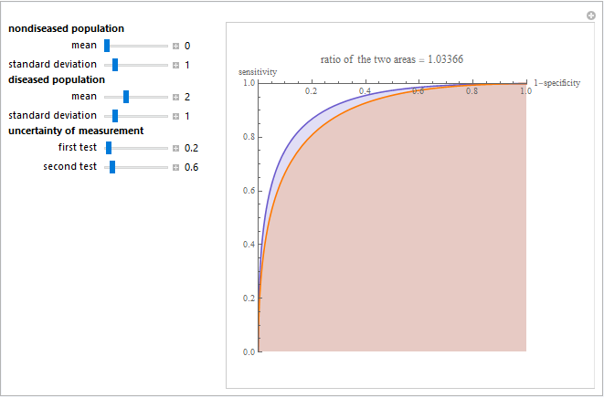
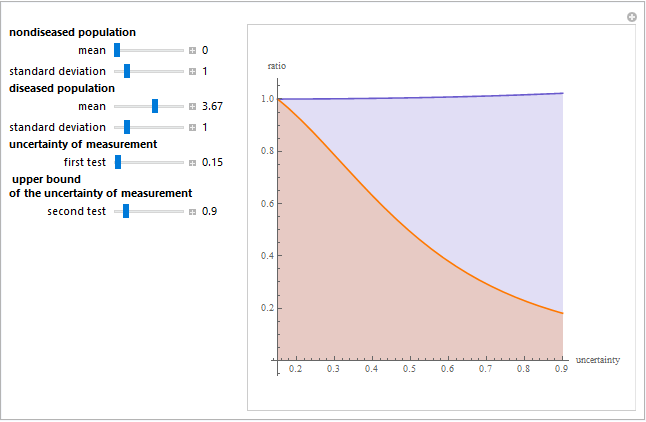
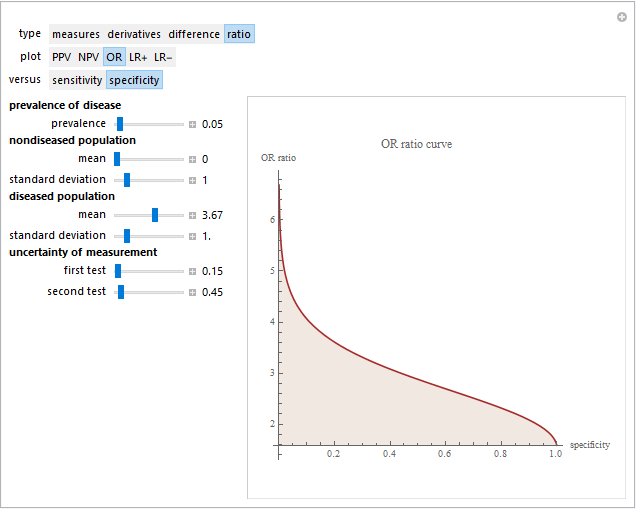
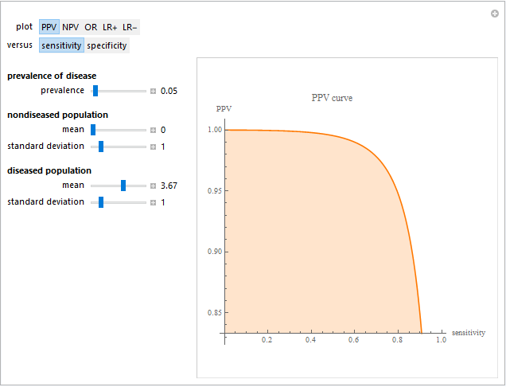
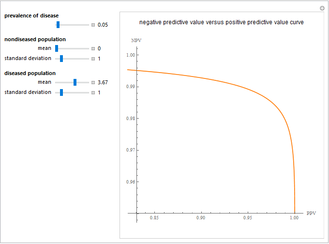
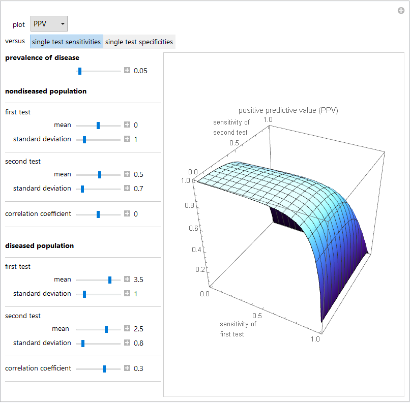
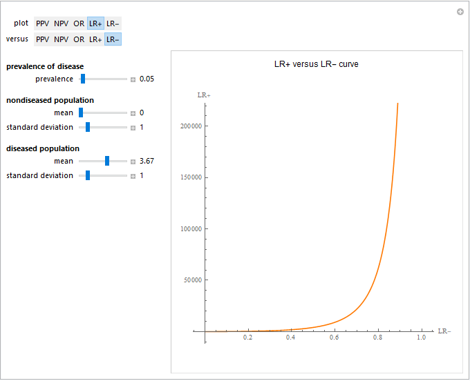
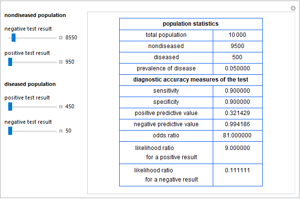
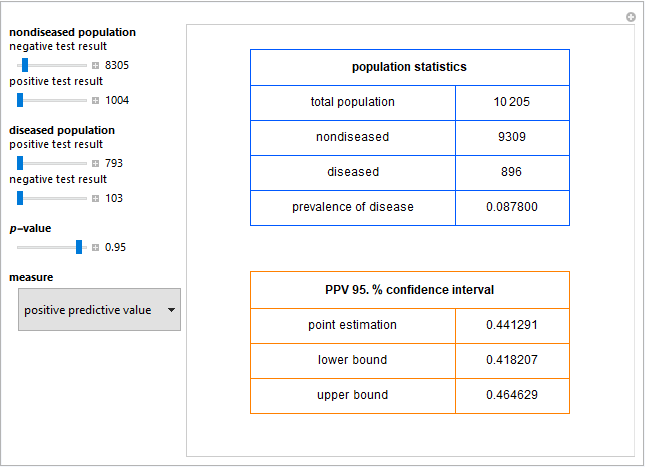

|
| Hellenic Complex Systems Laboratory |
| Home |
| HCSL Publications |
| GAs Based QC |
| QC Design |
| QC, Reliability, and Risk |
| Clinical Tools |
| Networks |
| Statistical Tools |
| Statistics of Complexity |
| Entropy and GAs |
HCSL Publications
Diagnostic Accuracy
1. Hatjimihail AT. Resource review: Whiting P. Quality of diagnostic accuracy studies: The development, use, and evaluation of QUADAS. Bristol: P E Whiting, 2006.Evidence-Based Medicine 2006:11;189.
Full text in Evidence Based Medicine
2. Hatjimihail AT. Receiver Operating Characteristic Curves and Uncertainty of Measurement. Wolfram Demonstrations Project, 2007.
Abstract
This Demonstration compares two receiver operating characteristic (ROC) plots of two diagnostic tests (first test: blue plot, second test: orange plot) measuring the same measurand, for normally distributed nondiseased and diseased populations, for various values of the mean and standard deviation of the populations, and of the uncertainty of measurement of the tests. A normal distribution of the uncertainty is assumed. The ratio of the areas under the ROC curves of the two diagnostic tests is calculated. The six parameters that you can vary using the sliders are measured in arbitrary units.

Snapshot of the Demonstration
Demonstration at the Wolfram Demonstrations Project
Mathematica source code (Revised on 09/04/2018)
Technical Report (PDF format)
3. Hatjimihail AT. Uncertainty of Measurement and Areas Over and Under the ROC Curves. Wolfram Demonstrations Project, 2009.
Abstract
This Demonstration plots the change, the relative change, the rate of change, and the relative rate of change of the area under (blue plot) and the area over (orange plot) the receiver operating characteristic (ROC) curve of a diagnostic test as the uncertainty of measurement increases from 0 to a user defined upper bound. The test measures a measurand on normally distributed nondiseased and diseased populations, for various values of the mean and standard deviation of the populations. A normal distribution of the uncertainty is assumed. The type of plot is selected using the menu. The five parameters that can be varied using the sliders are measured in arbitrary units.
Comment
The area under a ROC curve is used as an index of the diagnostic accuracy of the respective test. As AOC(u) = 1 - AUC(u), we can consider the area over the ROC curve as an index of its diagnostic inaccuracy. Actually the plots show that the relative change, the rate of change, and the relative rate of change of the area over a ROC curve versus the uncertainty of measurement are greater than the respective measures of the area under the ROC curve, for the same populations.

Snapshot of the Demonstration
Demonstration at the Wolfram Demonstrations Project
Mathematica source code (Revised on 23/11/2018)
Technical Report (PDF format)
4. Hatjimihail AT. Uncertainty of Measurement and Diagnostic Accuracy Measures. Wolfram Demonstrations Project, 2009.
Abstract
This Demonstration compares various diagnostic accuracy measures of two diagnostic tests. The two tests measure the same measurand, for normally distributed nondiseased and diseased populations, for various values of the prevalence of the disease, of the mean and standard deviation of the populations, and of the uncertainty of measurement of the tests. A normal distribution of the uncertainty is assumed. The mean and the standard deviation of each population and the uncertainty of each test are measured in arbitrary units. The measures compared are the positive predictive value (PPV), the negative predictive value (NPV), the (diagnostic) odds ratio (OR), the likelihood ratio for a positive result (LR+), and the likelihood ratio for a negative result (LR-). The measures are calculated versus the sensitivity or the specificity of each test. That can be selected by pressing the respective button. The types of plot are: both measures (first test: blue plot, second test: orange plot), partial derivatives of both measures with respect to uncertainty (first test: blue plot, second test: orange plot), difference, and ratio of the two measures. The types of plot can be selected by pressing the respective buttons, while the seven parameters can vary using the sliders.

Snapshot of the Demonstration
Demonstration at the Wolfram Demonstrations Project
Mathematica source code (Revised on 18/11/2018)
Technical Report (PDF format)
5. Chatzimichail T. Analysis of Diagnostic Accuracy Measures. Wolfram Demonstrations Project, 2015.
Abstract
This Demonstration shows various diagnostic accuracy measures of a diagnostic test for normally distributed nondiseasdy and diseased populations, for various values of the prevalence of the disease, and of the mean and standard deviation of the populations. The mean and the standard deviation of each population are measured in arbitrary units. The measures shown are the positive predictive value (PPV), the negative predictive value (NPV), the (diagnostic) odds ratio (OR), the likelihood ratio for a positive result (LR+), and the likelihood ratio for a negative result (LR-). The measures are calculated versus the sensitivity or the specificity of each test. That can be selected by clicking the respective button.

Snapshot of the Demonstration
Demonstration at the Wolfram Demonstrations Project
Mathematica source code (Revised on 16/11/2018)
Technical Report (PDF format)
6. Chatzimichail T. Correlation of Positive and Negative Predictive Values. Wolfram Demonstrations Project, 2018.
Abstract
This Demonstration examines the correlation of the negative predictive value (NPV) and the positive predictive value (PPV) of a diagnostic test for normally distributed nondiseased and diseased populations. Differing levels of prevalence of the disease are considered. The mean and standard deviation of the populations, measured in arbitrary units, are used.

Snapshot of the Demonstration
Demonstration at the Wolfram Demonstrations Project
Mathematica source code (Revised on 16/11/2018)
Technical Report (PDF format)
7. Chatzimichail T, Hatjimihail AT. Analysis of Diagnostic Accuracy Measures for Two Combined Diagnostic Tests. Wolfram Demonstrations Project, 2018.
Abstract
This Demonstration shows plots of various accuracy measures for two combined diagnostic tests applied at a single point in time on nondiseased and diseased populations. This is done for differing prevalence of the disease, taking into account the means and standard deviations of the populations and the respective correlation coefficients. The means and standard deviations are expressed in arbitrary units. You can select the following measures of the combined tests using the "plot" popup menu: sensitivity, specificity, positive predictive value, negative predictive value, (diagnostic) odds ratio, likelihood ratio for a positive result, and likelihood ratio for a negative result. These measures are plotted against the sensitivities or the specificities of each single test. You can select them by clicking the respective "versus" button.

Snapshot of the Demonstration
Demonstration at the Wolfram Demonstrations Project
Mathematica source code (Revised on 10/04/2018)
Technical Report (PDF format)
8. Chatzimichail T, Hatjimihail AT. Relation of Diagnostic Accuracy Measures. Wolfram Demonstrations Project, 2018.
Abstract
This Demonstration examines the relation of pairs of accuracy measures of diagnostic tests applied on normally distributed nondiseased and diseased populations. This is done for differing prevalence of the disease, taking into account the means and standard deviations of the populations. The means and standard deviations are expressed in arbitrary units. The measures considered are the positive predictive value ("PPV"), the negative predictive value ("NPV"), the (diagnostic) odds ratio ("OR"), the likelihood ratio for a positive result ("LR+") and the likelihood ratio for a negative result ("LR-"). The measures can be selected by clicking the respective "plot" and "versus" buttons.
Comment
To the best of our knowledge, with the exception of the pair PPV and NPV, the relation of any other pair of the given diagnostic accuracy measures has not been discussed in the literature.

Snapshot of the Demonstration
Demonstration at the Wolfram Demonstrations Project
Technical Report (PDF format)
9. Chatzimichail T. Calculator for Diagnostic Accuracy Measures. Wolfram Demonstrations Project, 2018.
Abstract
This Demonstration calculates various accuracy measures of a diagnostic test for a disease. This is done for differing negative and positive test results of nondiseased and diseased populations. The measures calculated are the sensitivity, the specificity, the positive predictive value ("PPV"), the negative predictive value ("NPV"), the (diagnostic) odds ratio ("OR"), the likelihood ratio for a positive test result ("LR+"), and the likelihood ratio for a negative test result ("LR-"). The negative and positive test results of the nondiseased and diseased populations are selected using the sliders.

Snapshot of the Demonstration
Demonstration at the Wolfram Demonstrations Project
Mathematica source code (Revised on 12/06/2018)
Technical Report (PDF format)
10. Chatzimichail T, Hatjimihail AT. Calculation of Diagnostic Accuracy Measures. Wolfram Demonstrations Project, 2018.
Abstract
This Demonstration shows calculations of point estimations and confidence intervals for various accuracy measures of a diagnostic test for a disease. This is done for differing negative and positive test results of nondiseased and diseased populations and differing p-values for the estimations of the lower and upper bounds of the confidence intervals. The calculated measures are the sensitivity, the specificity, the positive predictive value ("PPV"), the negative predictive value ("NPV"), the (diagnostic) odds ratio ("OR"), the likelihood ratio for a positive test result ("LR+"), and the likelihood ratio for a negative test result ("LR-"). The measures can be selected using the menu. The negative and positive test results of the nondiseased and diseased populations, along with the p-value, are chosen using the sliders.
Comment
The Wilson score method with continuity correction is used for calculating the confidence intervals of the sensitivity, the specificity, the positive predictive value and the negative predictive value. For the calculation of the confidence intervals of the (diagnostic) odds ratio, the likelihood ratio for a positive test result and the likelihood ratio for a negative test result, it is assumed that their natural logarithms have asymptotically normal distributions.

Snapshot of the Demonstration
Demonstration at the Wolfram Demonstrations Project
Mathematica source code (Revised on 26/07/2018)
Technical Report (PDF format)